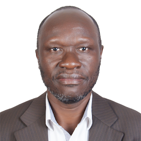

|

CONTACTMuni UniversityArua - Muni - Ocoko Road P. O. Box 725, Arua City Phone: +256-772-855057 Email: g.andogah@muni.ac.ug Website: www.GeoffreyAndogah.com MISSIONTo continually seek opportunities to stay active in research to sharpen my problem-solving skills; challenge myself in new ways; contribute to knowledge; promote human development through research; and provide leadership in higher education. LEADERSHIPAccomplished academic leader with over 20 years of experience in higher education, demonstrating progressive growth in roles of increasing responsibility. Currently serving as Dean of the Faculty of Technoscience at Muni University since 2017, bringing extensive experience in academic administration, faculty management, and institutional leadership. Previously held the position of Acting Dean at the Faculty of Science, Gulu University, showcasing adaptability and capability in taking on high-level interim roles. |
ANDOGAH
|